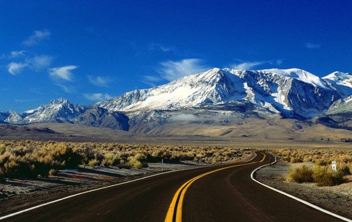

Yeni Kia ile geleneksel otomobil üreticisi olmanın
ötesine geçip bir hareketlilik markası haline geleceğiz.

İnsanoğlu göç yoluyla gelişmiştir.
Farklı kıtalar üstünden bir yerden diğerine hareket etmek.
Bu hareket arzusu ve ihtiyacı,
insanoğlu olarak DNA'mızda saklıdır.
Hareket ettiğimiz zaman yeni dünyalar görürüz,
yeni deneyimler yaşarız, yeni insanlarla tanışırız,
yeni bakış açıları keşfederiz.
İlham alırız.
Hareket, sürekli değişim kavramını içerir;
çevremizin, etrafımızın değişmesi ve
sonuç olarak da kendimizin değişmesi.
Hareket ettiğiniz zaman düşünmek için zamanınız olur.
Hareket, düşünmeye,
ilhama ve ilerlemeye imkan verir.